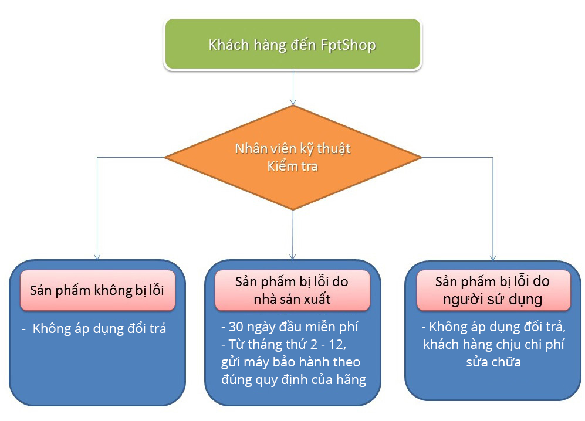

1. Mô tả WebSite
• Shop DO CONG NGHE: Website thương mại điện tử thực hiện hoạt động và vận hành nhầm phục vụ khách hàng. Đối tượng phục vụ là tất cả khách hàng trên 63 tỉnh thành Việt Nam
• Shop DO CONG NGHE: website chuyên cung cấp đồ công nghệ , đồ điện tử và các phụ kiện liên quan như : điện thoai , laptop , chuột ....
2.Quy trình giao dịch
Bước 1: Tìm kiếm và chọn sản phẩm cần mua.
Bước 2: Xem giá và thông tin chi tiết sản phẩm đó, nếu quý khách đồng ý muốn đặt hàng
+ Mua ngay
+ Trả góp 0%
Bước 3: Quý khách điền đầy đủ thông tin theo mua hàng theo mẫu:
+ Họ tên; Số điện thoại; Email
Bước 4: FPTshop.com.vn giao hàng tận nhà đến cho khách hàng hoặc khách hàng đến trực tiếp các cửa hàng trên toàn quốc để nhận hàng.
Giới thiệu về máy đổi trả tại FPT Shop
1. Máy đổi trả là gì?
Máy đổi trả là những Điện thoại , Máy tính bảng, Laptop được bán ra tại FPT Shop, miễn phí đổi sản phẩm tương đương trong 30 ngày đầu tiên nếu sản phẩm có lỗi nhà sản xuất.
FPT Shop chỉ thu lại những sản phẩm được bán ra tại FPT Shop, không thu mua lại các sản phẩm nơi khác. Vì vậy, các sản phẩm đều là hàng chính hãng và có chất lượng tốt nhất.
Tham khảo chi tiết chính sách đổi trả tại đây.
2. Quy trình đổi trả

3. Các sản phẩm Máy đổi trả
Sau khi được kiểm tra về tình trạng, chất lượng của các sản phẩm, điện thoại, máy tính bảng, laptop được bảo quản và trưng bày trong tủ kính trang trọng để khách hàng có thể lựa chọn dễ dàng các sản phẩm phù hợp.
Khách hàng có thể kiểm tra tình trạng máy, trải nghiệm các sản phẩm thỏa thích qua sự hướng dẫn nhiệt tình của nhân viên FPT Shop .
Hình ảnh nhân viên FPT Shop giới thiệu sản phẩm cho Khách hàng:
4. Hướng dẫn mua hàng Máy đổi trả
- Quý khách có thể đến trực tiếp FPT Shop để xem và mua máy, hoặc tìm kiếm máy đổi trả phù hợp về mức giá và nhu cầu sử dụng trên Website.
- Nếu tìm thấy sản phẩm vừa ý trên website, Quý khách có thể đặt giữ hàng trong 24 tiếng.
- Sau khi đặt hàng trên web, Quý khách sẽ trực tiếp đến FPT Shop để kiểm tra máy, nhân viên tại shop sẽ nhiệt tình tư vấn thông tin về sản phẩm này, nếu Quý khách không hài lòng có thể chọn sang sản phẩm khác.